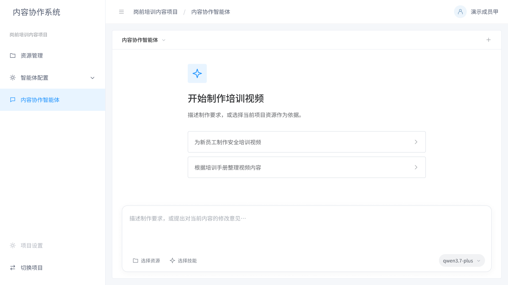
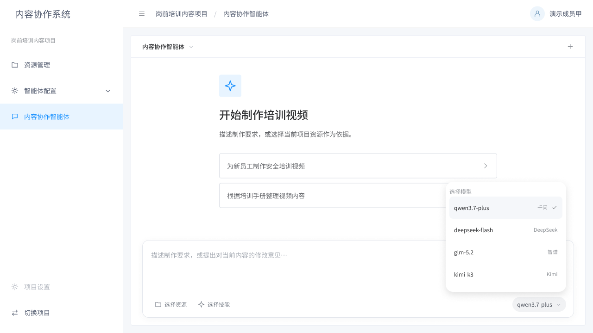
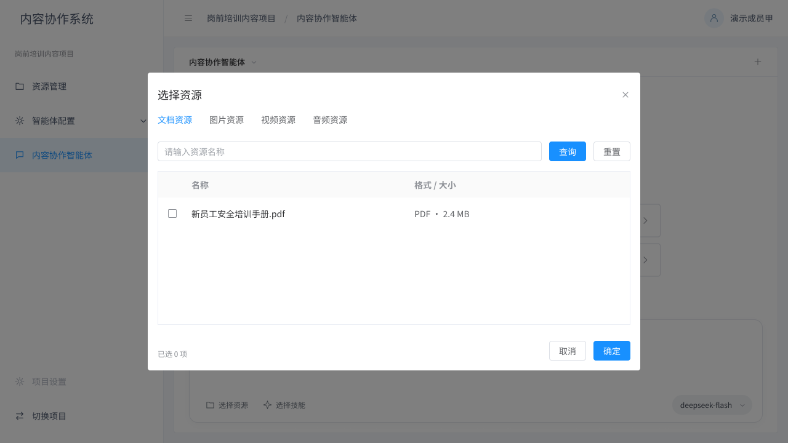
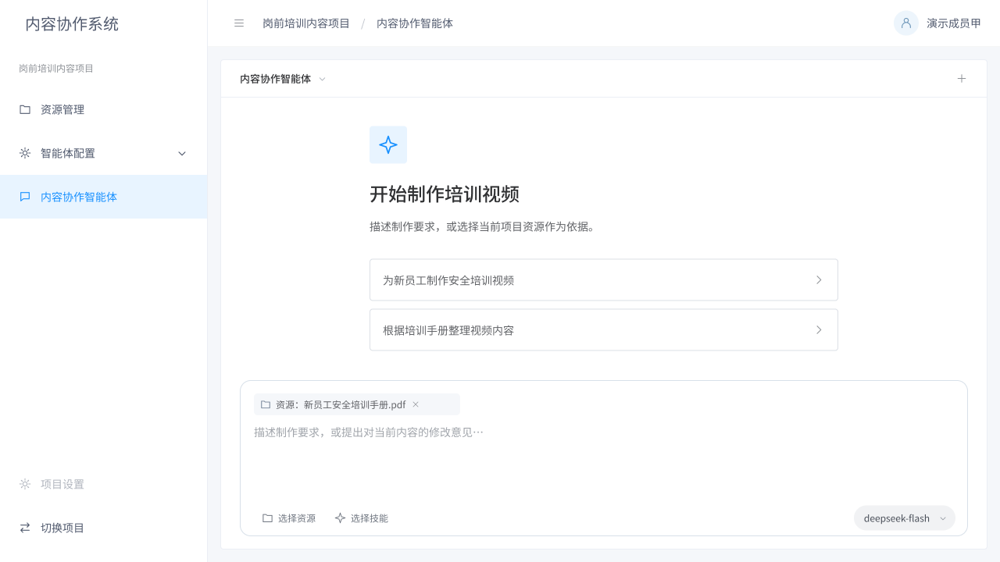
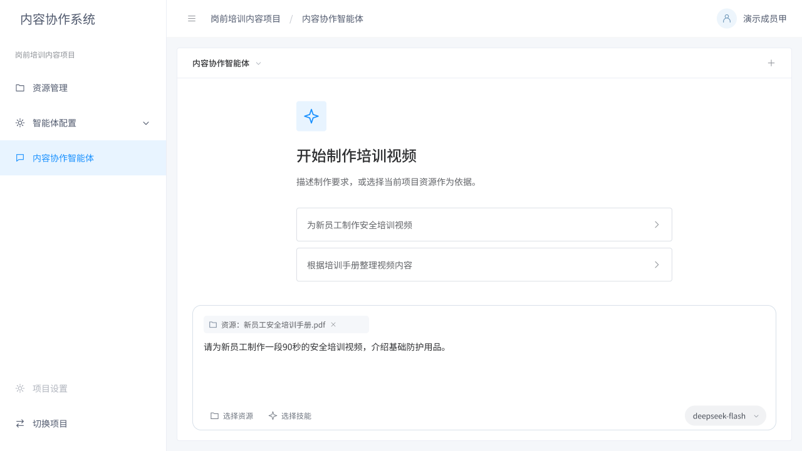

Figma图文分区 ↗ · Figma点击演示 ↗ · 统一需求正文
测试路线：右下模型 → deepseek-flash → 选择资源 → 勾选培训手册 → 确定 → 点击“为新员工制作安全培训视频”。本轮7状态、14条连线，只覆盖这条固定路线及取消/取消勾选分支；其余入口、真实键盘输入、查询和生成不在此演示范围。
设计查看保留右侧说明；Figma播放仅呈现业务画板。连线、尺寸、文案和导出图已核对；自动读取Figma播放页超时，实际播放点击仍待人工复核。此处为静态图文索引。




